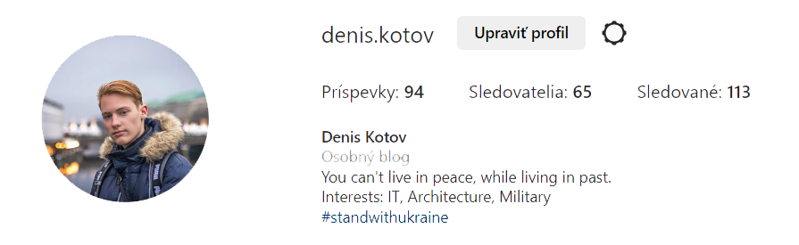

Denys Kotov
Volám sa Denys Kotov, môj otec je photograf v Nemecku.
Mám 18 rokov a som zahraničný študent z Ukrajiny na Slovensku.
Na slovensku už 3 roky a študujem IT v Strednej Sukromnej Skole Podnikania v Senici.
Milujem informačné technológie pretože sú neustále sa meniaci a poskytujú veľké množstvo možností
pre kreativitu a inovácie. IT mi umožňuje vytvoriť niečo nové a užitočné pre ľudí, čo je pre mňa veľká motivácia.
Tiež sa mi páči, ako IT spája ľudí a spoločnosti po celom svete.
Rozvoj IT taktiež prispieva k zlepšeniu kvalitného života a k efektívnejšiemu fungovaniu rôznych odvetví.
Vybral som si IT pretože som bol fascinovaný tým, ako sa môžem naučiť programovať a vytvoriť rôzne aplikácie a nástroje,
ktoré môžu pomôcť ľuďom. Tiež ma zaujíma, ako IT ovplyvňuje spoločnosť a ekonomiku. Verím, že v IT môžem nájsť
veľké množstvo príležitostí pre seba a môžem prispieť k rozvoju tohto odvetvia.

